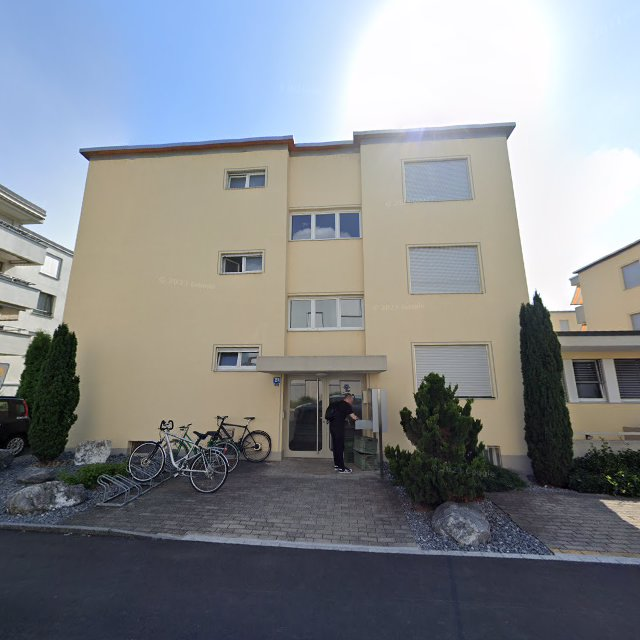
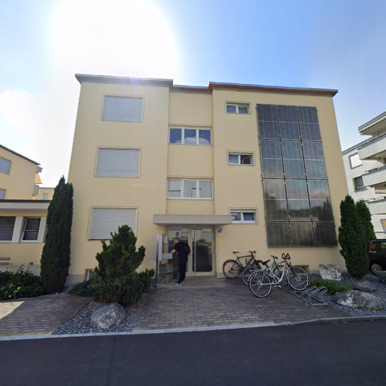
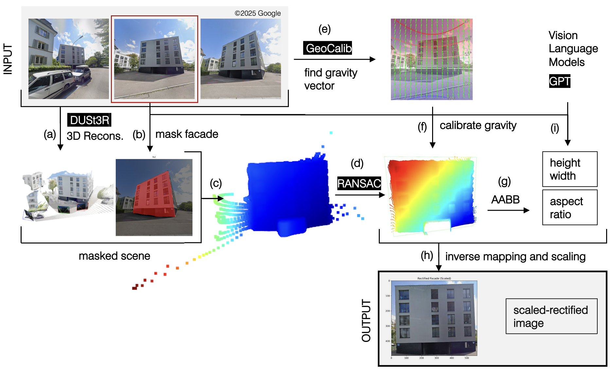
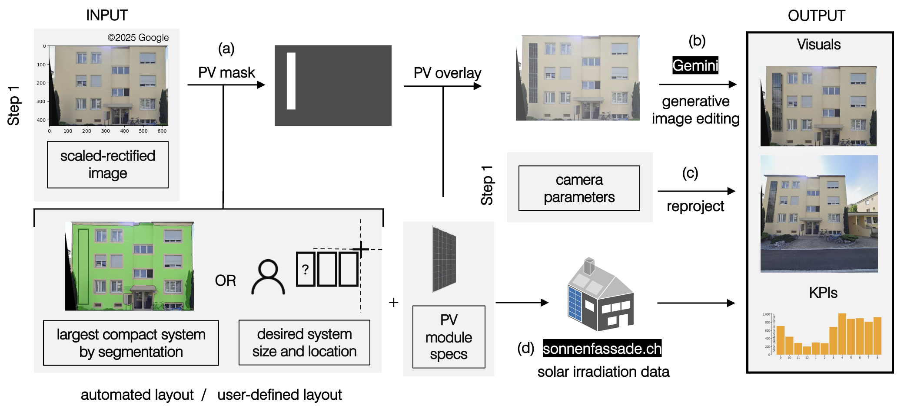
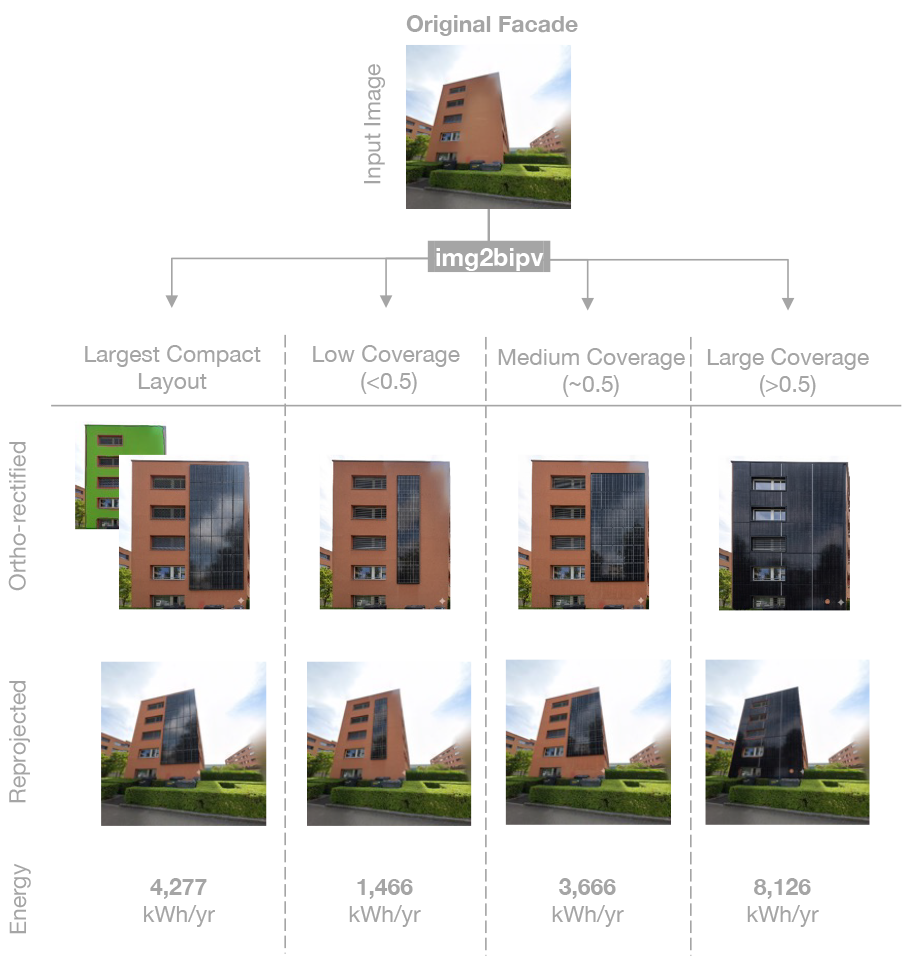

Automated facade solar retrofits using
feed-forward 3D reconstruction and
generative image editing
Automation in Construction Volume 193 · Article 107294 · January 2027

© Google
Abstract
Building-integrated photovoltaics (BIPV) enable solar energy generation from facades, yet facade retrofit assessment remains largely manual and time-consuming. This paper introduces a pipeline for automated analysis and visualization of BIPV retrofit designs. Unlike prior studies relying on building footprints, 3D models, or camera parameters, the proposed method automatically estimates facade aspect ratios and dimensions from images using feed-forward 3D reconstruction and vision-language models. The pipeline edits facade images using pretrained generative models to visualize BIPV retrofits considering system size and provides preliminary energy-yield estimates. On two datasets covering facades from 10 cities, the best-performing configurations achieved normalized mean absolute errors of 9% and 15% in aspect-ratio estimation and an average floor-count prediction error of 0.5 floors. The pipeline enables scalable evaluation of early-stage facade solar retrofit designs, supporting decision-making in retrofit planning by reducing reliance on manual surveying and modeling. The pipeline implementation and dataset are available to support future work.
Methodology
The proposed methodology integrates image-based geometry estimation, metric scale prediction, generative editing, and energy-yield estimation.
Step 1: Geometry reconstruction and rectification

Step 2: Retrofit generation and energy estimation

Results
Examples of generated BIPV retrofit designs for four building categories. Select a coverage strategy, image view, and facade example to compare the outputs.
Generated images illustrate potential retrofit designs.
Coverage strategies and estimated energy yield

Citation
Duran, A., Waibel, C., Bickel, B., Armeni, I., & Schlueter, A. (2027). Automated facade solar retrofits using feed-forward 3D reconstruction and generative image editing. Automation in Construction, 193, 107294. doi:10.1016/j.autcon.2026.107294
@article{duran2027image2bipv,
title = {Automated facade solar retrofits using feed-forward
3D reconstruction and generative image editing},
author = {Duran, Ayca and Waibel, Christoph and Bickel, Bernd
and Armeni, Iro and Schlueter, Arno},
journal = {Automation in Construction},
volume = {193},
pages = {107294},
year = {2027},
doi = {10.1016/j.autcon.2026.107294},
url = {https://doi.org/10.1016/j.autcon.2026.107294}
}